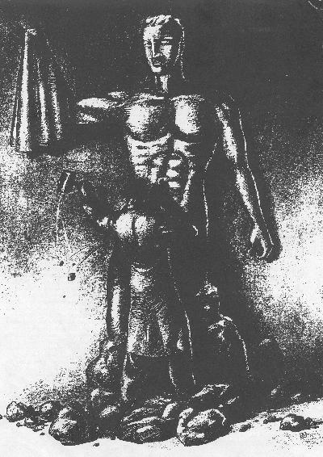

THE CIRCUMCISION REFERENCE LIBRARY
"I think that I could have accepted
a deformity that was an accident
of nature, but I can't accept
that someone did that to me."1
The two questions I dread most these days are "What kind of work do you do?" and "What is the title of your new book?" When I say that I lecture and write about foreskin restoration, usually to people who have never before heard of such a thing, their responses range from a puzzled look (like maybe they did not hear me right) to outright disdain (as though I must be some kind of a weirdo to believe that a human male should even care whether or not he has a foreskin).
The disdain stems, no doubt, from the fact that we in the United States have come to recognize two "normal" styles of penis—circumcised and uncircumcised—and from the fact that a majority of parents are continuing to choose for their sons the more seemingly trouble-free, low-maintenance circumcised variety as opposed to the reputedly untidy, trouble-prone natural sort. Most Americans seem unaware that the worldwide picture is much different: every other nation that adopted routine infant male circumcision as a "health measure" early in the 20th century has moved away from the practice. Indeed, ours is the only nation in the world that now circumcises a majority of its newborn males for nonreligious reasons.
The historical picture differs as well. No matter what reasons have been given to substantiate routine male circumcision throughout the centuries, countless circumcised males have been unhappy about what was done to them—so much so that some have relentlessly sought, by whatever means were available to them at the time, to undo the effects of the circumcision they did not choose for themselves. Historical accounts of both the motives and the methods used for foreskin restoration form a fascinating chronicle.
Ancient Customs
The origin of male circumcision is lost in antiquity. We know, however, that it was practiced by Egyptians long before the time of Abraham, the father of Judaism. Whatever its earlier significance may have been, male circumcision took on a distinct meaning with Abraham: it was accepted by him as the sign and seal of the covenant between God and God's chosen people. According to dictate, the practice was to be universal among all male members of the community; whether freemen or slaves. Furthermore, the rite was to be performed on the eighth day of life. Thus was born, for the first time in recorded history, routine infant male circumcision—a tradition tahta now spans approximately 4,000 years.
Foreskin restoration, also known as epispasm or decircumcision, has been documented periodically for more than half of those 4,000 years. The earliest references, dating from about 200 BC, contain descriptions of several different "methods" adopted in response to the prevailing social and political climate.2
Throughout the Hellenic period (323 to 30 BC) ethnic groups were pressured to give up their individual traditions in favor of one grand, universal and enlightened culture. For the Jewish male, this mean forsaking among other cherished traditions, his unique sign and seal of the covenant. Additional measures imposed on the Jewish community included the Greeks' idealization of the natural male form, the levying of special taxes such as a "temple tax," and selective military call-ups of circumcised youths. Under such conditions, it was inevitable that some less devout Jewish males would seek the benefits of being part of the larger society and would therefore attempt to hid or disguise evidence of their circumcision.3
The need to disguise his circumcision was especially critical for any young Jewish athlete who wished to compete in the Greek games. These games were played in the nude, and the slightest exposure of the glans penis was considered both immodest and immoral. Even a non-Jewish youth with a "deficient" foreskin was expected to tie or clamp it forward over his glans so as not to offend the spectators.
Jewish athletes of the time were able to accomplish this feat because their circumcisions had removed only the typically protruding tip of the infant foreskin, leaving the inner lining of the infant foreskin attached to the glans—thus leaving themature male with a "miniforeskin" that could rather easily be drawn forward over the glans. (Not until about 140 AD, after the Bar Kokba uprising, was the more radical procedure of "stripping bare the glans" added to the Jewish circumcision rite.4) Due most likely to Jewish athletes who regularly secured their rather generous foreskin remmant forward over the glans, it was discovered that over time the foreskin itself elongated. Before long, foreskin restoration through "stretching" (or pulling) became a widespread practice.5
Eventually the physician Celsus, whose writings date from the early Roman period (AD 14 to 37), developed two surgical procedures for elongating or replicating the male foreskin.6 The "laying bare of the glans" followed about 100 years later and was intended, according to Jewish historians, to put an end to foreskin restoration so that the sign of the covenant could not be undone. And if the historical record is any indication, the new, more radical circumcision succeeded in doing just that.
Not until the Nazi regime of this century do significant references to foreskin restoration reappear. According to the literature, there were Polish doctors who devised hasty, crude surgical techniques to help Jews in occupied areas of Europe avoid detection.7 Some of these procedures were surprisingly reminiscent of those described by Celsus nearly 2000 years earlier. There is no evidence that any of these methods was continued after the collapse of the Nazi regime.

Modern-Day Reversals
In the United States, male circumcision has been practiced as a medical procedure for more than 100 years, and routine infant male circumcision has been practiced since early in this century. The first recording of contemporary elective foreskin restoration, however, did not appear until 1963, in an article by South African physician Jack Penn.8 His method featured a free-graft procedure utilizing skin taken from elsewhere on the body. Soon after his article gained attention in the United States, interested men in this country began pressuring their doctors to develop procedures for restoring the foreskin. Between 1977 and 1990, several surgical methods were devised.9
One of the simplest methods involved the implantation of a small platinum ring within the tip of the "foreskin." The ring held the skin in place over the glans, resulting in a "created phimosis" (meaning that the skin could not be retracted while the ring was in place). The hope was to generate enough new skin to permanently re-cover the glans after the ring was removed. As it turned out the skin was left was a fibrous, raised band where the platinum ring had been lodged and there was not enough skin to cover the glans.
While reviewing the results of the implanted-ring procedure, an engineer living the Pacific Northwest hit upon the idea of using tape to hold the skin in place over the glans. His intent was to avoid both the surgery needed to have the platinum ring implanted and the unsightly fibrous band it left. This simple idea was circulated among a small network of men who had been sharing whatever information they could find on foreskin restoration as well as their ideas and experimentation. As a result, in 1982, BUFF (Brothers United for Future Foreskins) was born.
Descriptions of the BUFF taping method of foreskin restoration, in its various stages of development have been circulating since 1982, advancing a growing network of interest. My particular input has been to revise and update the duplicated material in 1990, to estabish the UNCircumcising Information and Resources Centers (UNCIRC) in California in 1991, and to write the book The Joy of Uncircumcising! in 1992. Since then the book has been reviewed in JAMA (The Journal of the American Medical Association),10 Plastic and Reconstructive Surgery,11 and various men's movement publications such as Journeyman12 and Mentor.13 The move from duplicated information sheets available through small, private centers to a book available in bookstores nationwide represents a major step forward in the distribution of information to circumcised men throughout the English-speaking world, where routine male circumcision has brought such pain and left so many wounds.
In its present form, the non-surgical restoration procedure is divided into three stages. Stage I calls for the application of Band-Aid-like straps to hold the shaft skin as far as possible over the glans. In Stage II, a tape ring is wrapped around the bunched shaft skin held in front of the glans. In Stage III, which begins when the weight and bulk of the penis no longer provide sufficient traction for further expansion, a device is added to furnish the needed tension.
Curiously enough, pioneers in plastic surgery "discovered" the phenomenon of tissue expansion and began applying it to human subjects in the late 1970s—precisely when the small network of men began gathering information that led them to apply tape to the shaft skin in an effort to restore the foreskin. Within a few years, Dr. Charles Horton, of Norfolk, Virginia, was using surgically implanted expansion devices to perform foreskin restoration, basing his work on the priniciples of tissue expansion as developed by plastic surgeons and the nonsurgical "stretching" method of foreskin restoration employ traction to generate new skin cells and, thereby, create additional skin.
The Desire for a Foreskin
Invariably, the questions that follows (after the laughter has died down) is, "Why would any man who's never had one want one?" The reasons given by men are diverse and, often, painfully personal. Some reasons, however, are rather common. Many circumcised men find that as they grow older the exposed glans of their penis becomes increasingly insensitive to sensual stimulation—due, no doubt, to years of exposure and frictional contact with clothing—and they want to experience more of the sensitivity associated with the naturally covered and protected mucous surface of the glans. In fact, regained sensitivity of the glans is the most frequently reported outcome of restoration and is typically experienced long before the program is completed.
Other circumcised men, especially those bearing the "tidy, tight cut" favored by many physicians in the United States, complain that the shaft skin is pulled too tight during erections, often to the point of pain. Some of these men cannot engage in foreplay, much less intercourse, without using artificial lubrication. Men who find sexual activity uncomfortable due to the painfully distended skin of their penis frequently undertake a restoration program simply to gain enough skin to comfortably accommodate an erection, waiting until later to decide whether or not to completely re-cover the glans with a restored foreskin.
A large number of men never feel whole after realizing that a part of their body has been cut off. Recognizing the importance of a positive body image, we as a culture assume that a woman who loses her breast will want (and need) breast reconstruction if it as at all possible. We would never dream of asking her why or , worse yet, "What good is a breast if it is not a real one?" We understand far too well her deep need to feel whole. On the other hand, because we believe that the penis with its foreskin amputated is "normal" and because we harbor the equally false notion that men are less sensitive about body image, rarely do we think twice about asking a man who wants to restore his foreskin, "Why would you want to do that? What good is a fake one anyway?" And surely, insurance companies are not going to pay to fix a "perfectly normal, healthy" penis.
Unfortunately, the more information we as a society disseminate about the negative effects of infant circumcision, the more a circumcised man must face the extent to which his penis has been diminished.15 And the more we expose the medical and social myths used to justify infant circumcision, the more the circumcised man must face the fact that what was done to him was, in all probability, pointless.16 Is it any wonder that many of these men want back as much as can possibly be restored? "I feel I was raped in the operating room of Tampa General Hospital," writes one man, "and I want back what was mine."17
A fourth reason given for restoring foreskin is the need to regain a sense of body ownership—a birthright that was in most cases violated, if not annihilated, within the first hours of life. For many of these men, the availability of a means to reverse their circumcision, whether acted on or not, serves as catalyst to awaken long buried and denied feelings of rage and indignation. At the root of this reaction lies an awarness that a perfectly normal, healthy—indeed, the most sensually responsive—part of their body was surgically amputated when they were too young and helpless to consent, refuse, or resist. As one man puts it, "I'm restoring my foreskin because I was born with one, and damn it, I'm going to die with one."18
Thousands of men have requested the instructional materials or purchased the book to help them restore their foreskin nonsurgically, and an unknown number of men continue to seek surgical restoration. As a result, a growing number of men have by now regained a foreskin of sufficient length to fool even physicians performing routine physical examinations. Many of these men maintain that restoring their foreskin is "the best thing I have ever done for myself."
The tragedy is that they should ever have needed to do such a thing for themselves, since, with rare exceptions, each one was born with a perfectly good foreskin on his penis and since, also with rare exception, each one was deprived of his basic human right to participate in the amputation decision. In this time of unparalleled emphasis on an individual's right of choice, can it be long before this fundamental right is extended to males in our country, regardless of their age?
Notes
For More Information
Literature
Bigelow Jim, PhD. The Joy of Uncircumcising! Aptos, CA: Hourglass, 1992. A history of male circumcision and foreskin restoration, plus instructions for nonsurgical restoration. Available by sending $18.95 (plus $1.23 state tax for CA residents to UNCIRC, PO Box 52138, Pacific Grove, CA 93950. [CIRP Note: first edition out of print; second edition is also out of print.]
Boyd, Billy Ray. Circumcision: What It Does San Francisco: Taterhill Press, 1990. Available from C. Olson BOX 5100-CB, Santa Cruz, CA 95063-5100. [CIRP Note: out of print]
Briggs, Anne. Circumcision: What every parent should know. Earlysville, VA: Birth and Parenting Publications, 1985 Available from Birth and Parenting Publications, PO Box 134, North Garden, VA 22959. [CIRP Note: out of print]
Erickson, John A. Making America Safe for Foreskins. Private Publication, 1992 Available from John A. Erickson, 1664 Beach Boulevard, #216, Biloxi, MS 39531. [CIRP Note: out of print]
Ritter, Thobas J., MD. Say No to Circumcision! Aptos, CA: Hourglass, 1992. Available from NOCIRC, PO Box 2512, San Anselmo, CA 94979-2512. [CIRP Note: out of print; revised edition by George C. Denniston, MD, is now available.]
Romberg, Rosemary. Circumcision: The Painful Dilemma. South Hadley, MA: Bergin & Garvey, 1985 Currently out of print; available through interlibrary loan.
Wallerstein, Edward. Circumcision: An American Health Fallacy. New York: Springer Publishing, 1980. Currently out of print; available through interlibrary loan.
Organizations
Circumcision Resource
Center
PO Box 232
Boston, MA 02133
617-523-0088
Offers information on alternative bris ceremonies.
NOCIRC National
Headquarters
PO Box 2512
San Anselmo, CA 94979-2512
415-488-9883
Offers circumcision information.
NOHARMM
PO Box 460795
San Francisco, CA 94146
A men's activism network.
UNCIRC/RECAP
3205 Northwood Drive, Suite 209
Concord, CA 94520-4506
510-827-4077
A prime source of information on foreskin restoration and support groups.
For more information on circumcision and care of the intact penis, see the following articles in past issues of Mothering: "Circumcision" and "View from Europe," no. 16; "Circumcision, The Painful Dilemma," no. 22; and "Caring for the Intact Penis" and "A Nontraditional `Circumcision' Ceremony," no. 44. Also see the Mothering Special Edition Circumcision: The Rest of the Story.
Jim Bigelow, PhD, is the author of the book The Joy of Uncircumcising! Restore Your Birthright and Maximize Sexual Pleasure (1992) and founder of UNCIRC. He continues to oversee the center in Pacific Grove, California, where he lives with his wife Deb. Jim and Deb have been married for 27 years and have two grown children and two grandchildren.
http://www.cirp.org/library/restoration/bigelow1/